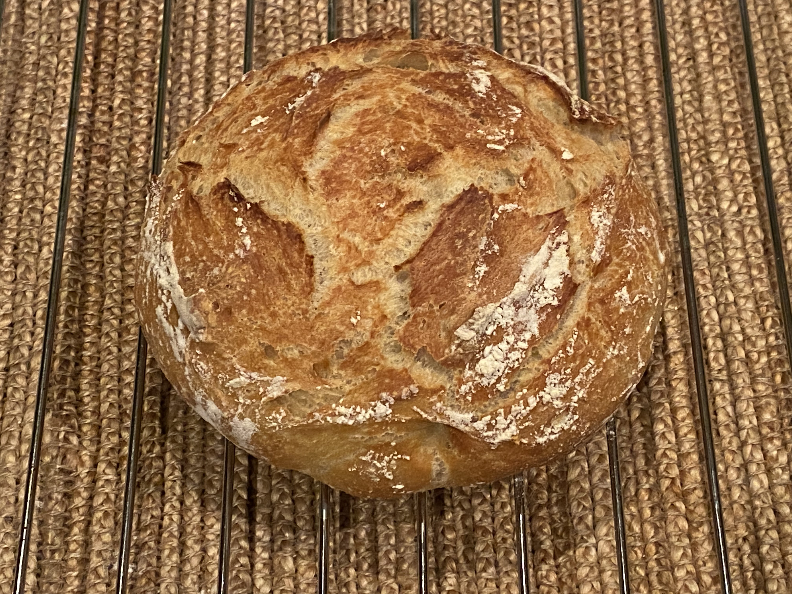

Álvaro Ramírez
My first bread (pane dei Castelli recipe)

I followed The easiest no knead bread recipe (video).
No-knead method
Dough
- 1 1/4 cups (300g) lukewarm water
- 2 teaspoons (8g) salt
- 1 teaspoon (3.5g) yeast
- 3 cups (420g) all purpose flour
Mix thoroughly (I like to use Ciro's spoon mixing method from this video), cover and rest for 6 hours. Stretch and fold if the dough collapsed on itself to rescue.
Bake
- Preheat oven (and dutch oven) at 230°C.
- Flour.
I didn't have a dutch oven, but my oven-proof saucepans (with lid) did just fine. Carefully take the pan out of the oven, sprinkle the bottom with some flour, and place the dough inside. Cover with lid (careful, also hot) and bake for 30-35 minutes.
Crust
- Reduce heat to 200°C.
Remove the lid and bake for another 10 minutes or until you get the crust darkness of your choice.
Rest
Let the bread cool on a cooling rack for 45 mins before cutting. If no rack available, set upsidedown.
Stretch and fold method
Dough
- 1 1/4 cups (300g) lukewarm water
- 2 1/2 teaspoons (10g) salt
- 2 teaspoon (7g) yeast
- 3 cups (420g) all purpose flour
Mix thoroughly (I like to use Ciro's spoon mixing method from this video), cover and rest for 6 hours. Stretch and fold if the dough collapsed on itself to rescue.
Stretch and fold
See Emma Fontanella's stretch and fold technique and apply 4-5 times every 30 mins.
Follow no-knead method
Remaining steps are the same as the no-knead method.